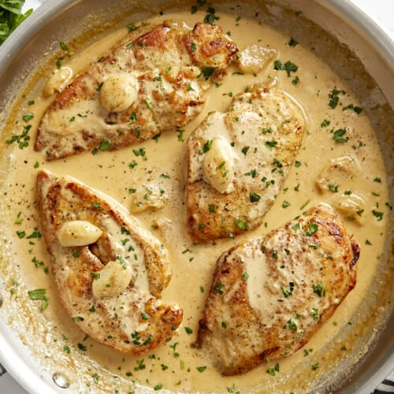

Creamy Garlic Chicken

Description
The Creamy Garlic Chicken starts with a tender, panseared chicken breasts that are then covered with a creamy, garlic-infused sauce. Sprinkle the flour over both sides of the breasts and rub it until the chicken is evenly coated. Heat medium with olive oil and butter until cooked.
It is so delicious, so flavorful and so easy to make for a quick weeknight meal!
- Prep Time: 10 minutes.
- Cook Time: 30 minutes.
- Total Time: 40 minutes.
Ingredients
- 2 boneless, skinless chicken breasts (about 1.3 lbs. total).
- 1/2 tsp Italian seasoning.
- 1/2 tsp salt.
- 1/4 tsp freshly cracked black pepper.
- 1/4 cup all-purpose flour.
- 2 Tbsp olive oil.
- 2 Tbsp butter, divided.
- 1 whole garlic bulb (about 8-9 garlic cloves).
- 1 cup chicken broth.
- 3/4 cup heavy cream.
- 1/2 tsp garlic powder.
- Salt and pepper to taste.
Steps
- Using a sharp knife, carefully fillet each chicken breast into two thinner cutlets (or use thin-cut chicken breasts).
- Season each breast with Italian seasoning, salt, and black pepper. Then sprinkle the flour over both sides of the chicken breasts and rub it in until the chicken is evenly coated.
- Heat a large skillet over medium heat and add the olive oil and 1 Tbsp of butter. Once the skillet is hot, add the chicken and cook on each side until golden brown and cooked through (about 4 minutes per side). Remove the cooked chicken to a clean plate and cover to keep warm.
- While the chicken is cooking, peel the garlic cloves and then carefully smash them with the side of a large chef's knife by pressing down on the side of the knife with the heel of your hand.
- Once the chicken is removed, to the same skillet add the remaining 1 Tbsp of butter, then add the garlic cloves. Turn the heat down to medium-low and saute the garlic for 3 minutes or until lightly browned and fragrant. Make sure to stir the garlic frequently to prevent it from burning.
- Next pour the chicken broth and heavy cream into the skillet, then add the garlic powder. Stir and scrape up any brown bits from the bottom of the skillet. Allow the sauce to simmer in the skillet for 8-10 minutes, or until it has reduced and thickened by about 50%. Taste the sauce at this point and add salt and pepper if needed and then add about 1/8 tsp of salt and 1/8 tsp of black pepper.
- Finally, return the cooked chicken breasts to the skillet and spoon the creamy sauce over top. Allow the chicken to heat through. Serve with fresh chopped parsley (optional), and enjoy!
Home